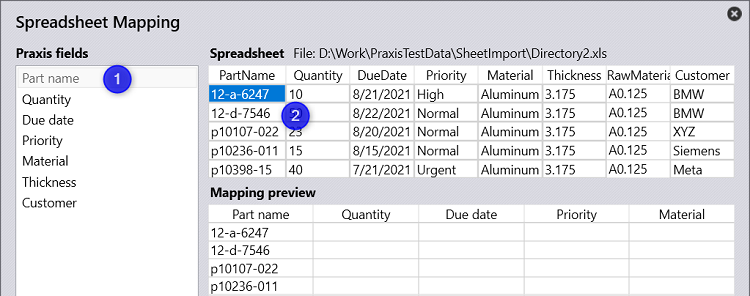
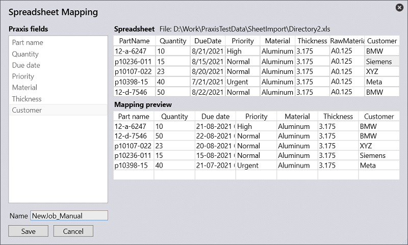

To map spreadsheet, first click on one of the Praxis fields (say Part name) followed by a spreadsheet cell under the desired column in the right to create the mapping between the Praxis and Spreadsheet columns. The mapping preview is updated in the bottom to reflect the mapping result. The mapped field is grayed-out to reflect the mapping status. Double click the grayed-out, mapped field to un-map. Click on a mapped field and click another spreadsheet column to alter the mapping. Repeat this all-required Praxis fields to complete the mapping.

Type-in the mapping name and press Save button to save the mapping. The saved mapping settings are synchronized across all stations and are used by Praxis by-default when spreadsheet is imported the next time.